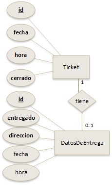

2.5.4.- Relaciones uno a uno
¿Sabrías indicar la relación uno a uno entre dos entidades?
En este apartado vamos a profundizar en cómo indicar a través de anotaciones la existencia de una relación uno a uno en el modelo de datos. Como en la aplicación de mini punto de venta tenemos un ejemplo, vamos a resolver dicho caso. El ejemplo de relación uno a uno lo tenemos entre la entidad Ticket y la entidad DatosDeEntrega. Cada Ticket será único y, además, tendrá sus propios valores asociados en la entidad DatosDeEntrega.

Empecemos por la entidad Ticket. Lo primero que haremos en esta entidad será añadir un atributo que serán los datos de entrega, eso lo indicaremos así:
@Entity
public class Ticket implements Serializable{
//... resto del código
@OneToOne
private DatosDeEntrega direccionEnvio;
//... resto del código
}La relación se materializará por tanto como un atributo en la entidad Ticket anotado con @OneToOne para indicar la existencia de dicha relación, y JPA se encargará del resto. No obstante, podemos configurar dicha relación un poco más. Sabemos que no es obligatorio que un Ticket tenga DatosDeEntrega. ¿Cómo lo indicamos?
Se podría realizar así:
@Entity
public class Ticket implements Serializable{
//... resto del código
@OneToOne(optional = true, orphanRemoval = true, cascade = CascadeType.PERSIST)
private DatosDeEntrega direccionEnvio;
//... resto del código
}El parámetro optional = true indica que esa relación es opcional, es decir, que un Ticket puede no tener DatosDeEntrega. Esto permitirá que el atributo direccionEnvio anterior pueda ser null.
Por otro lado, si eliminamos un Ticket no tiene sentido que los datos de entrega se almacenen. Si se elimina el Ticket, pero no los DatosDeEntrega, serían unos datos de entrega huérfanos. El otro parámetro de la anotación @OneToOne, orphanRemoval = true, hace referencia precisamente a eso: si se elimina el Ticket se eliminarán también los DatosDeEntrega asociados para que no queden huérfanos.
Además de los dos parámetros anteriores, aparece el parámetro cascade = CascadeType.PERSIST. Este tercer parámetro permitirá que el cambio en los datos de entrega asociados al Ticket, se guarden al guardar el Ticket. De esa forma, solo tendremos que hacer una operación de guardado, sin tener que guardar los datos de entrega y el Ticket por separado.
Pero cuidado, aún faltaría una cosa, y es indicar la relación en el otro sentido. En la entidad DatosDeEntrega también deberíamos indicar dicha relación de forma similar:
@Entity
public class DatosDeEntrega implements Serializable {
//... resto del código
@OneToOne(optional=false)
private Ticket ticket;
//... resto del código
}El proceso es similar, y la anotación es la misma (@OneToOne), pero fíjate que en este caso se ha puesto optional=false. Esto es porque aunque un Ticket no tiene porqué tener unos datos de entrega asociados obligatoriamente, al revés no es lo mismo: los datos de entrega siempre tienen que tener un Ticket asociado. Con esto estamos diciendo que el atributo ticket, de la entidad DatosDeEntrega, no puede ser nunca null.
Autoevaluación
Retroalimentación
Falso
No es del todo cierto, dado que para que esa relación sea opcional es necesario indicarlo con el parámetro optional=true de la anotación @OneToOne.